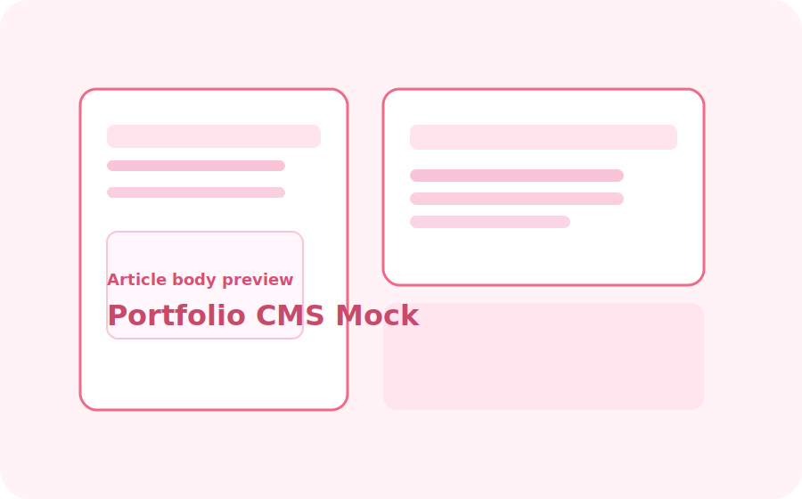

Portfolio CMS Mock
Design-focused front-end prototype for an authoring and presentation system: editorial grids, accessible forms, and typography-first layouts.
About this project
The mock explores editorial layouts optimized for writing and showcasing projects. The emphasis is on readable type hierarchy and a clear typographic rhythm that adapts to screens.
Highlights
- Editorial page layouts for long-form content
- Accessible design patterns for forms and content
- Focus on typographic scale and whitespace
Tools & References: HTML, CSS, Figma